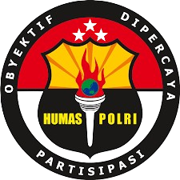
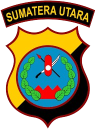
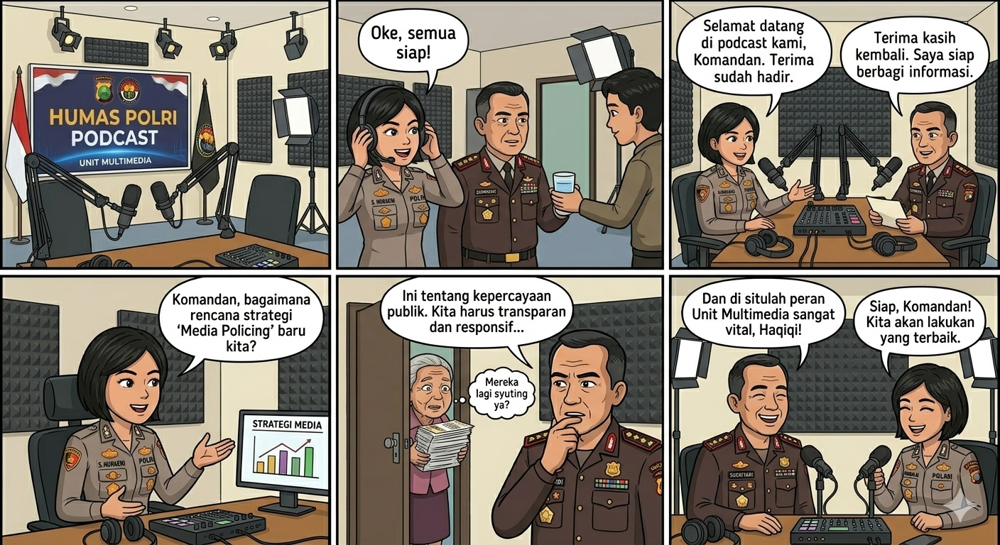
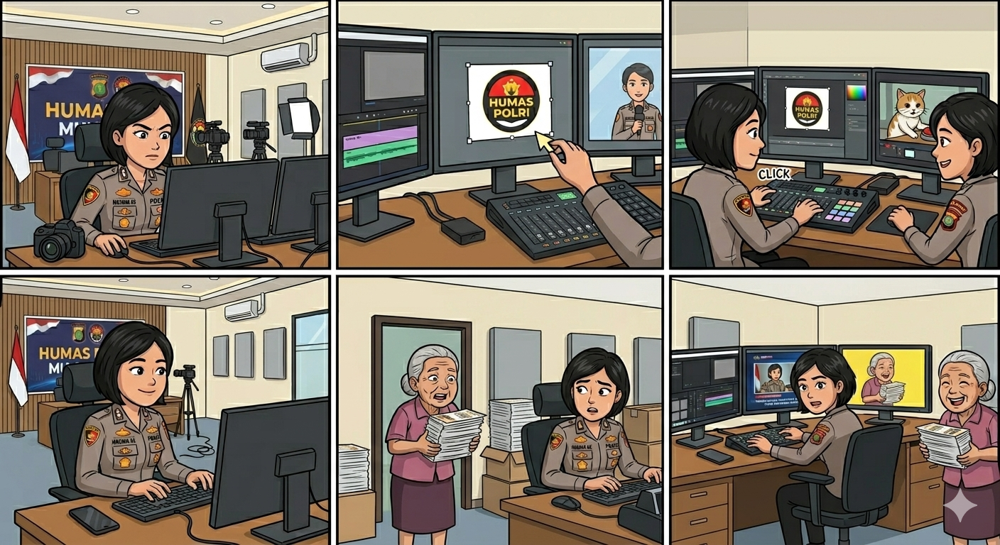
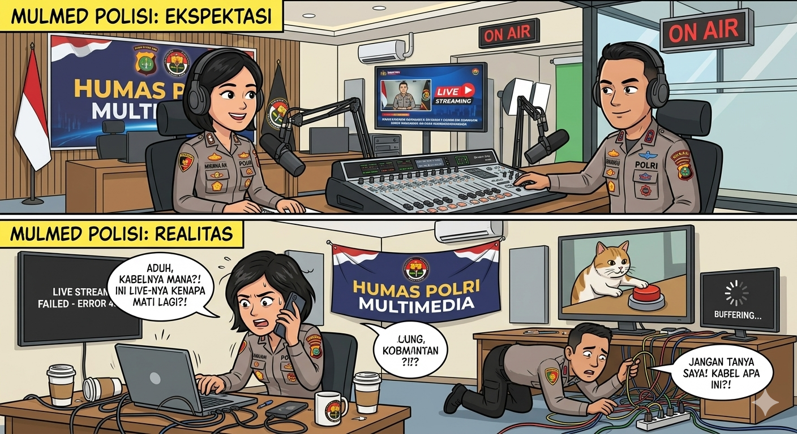
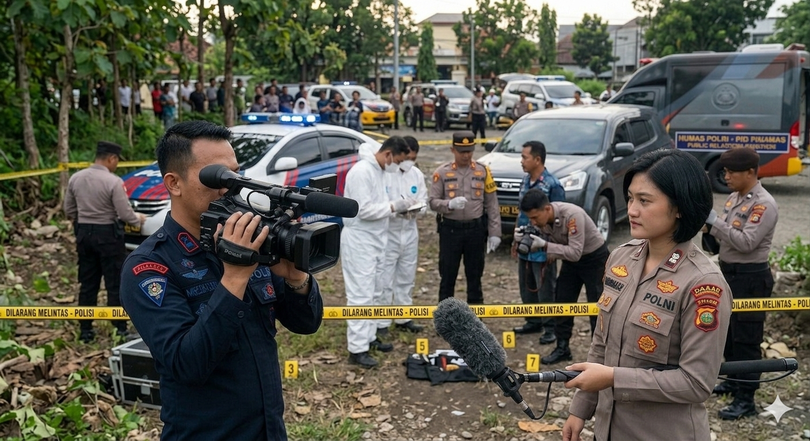
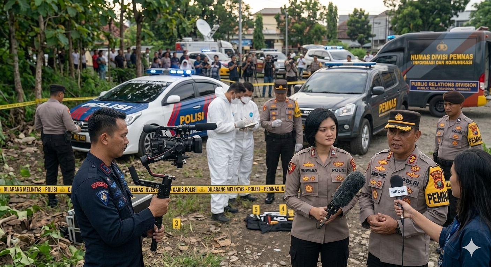
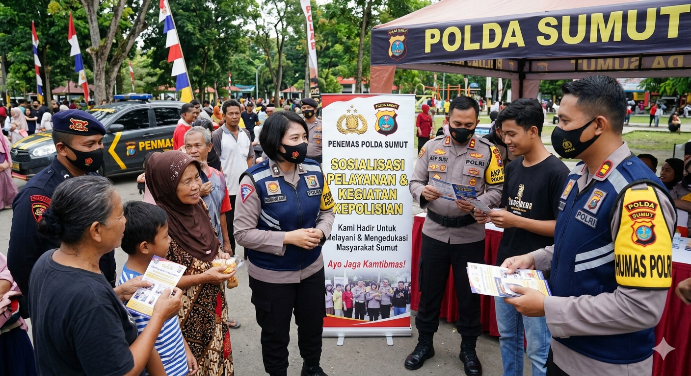
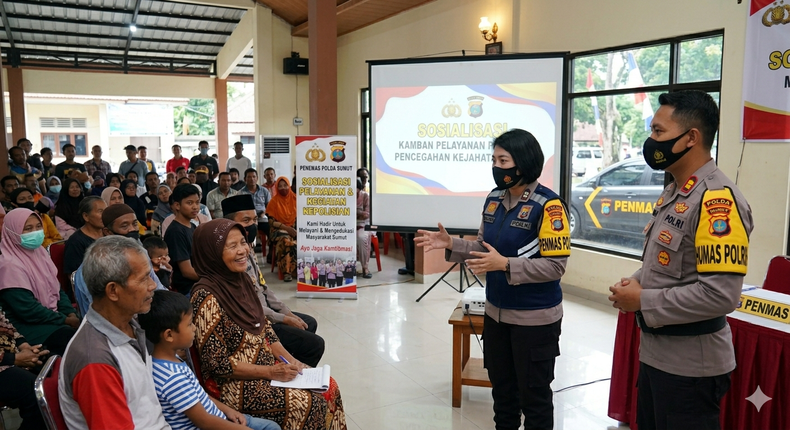

HUMAS POLDA SUMUT
Mewujudkan Keterbukaan Informasi Publik
Adalah gambaran mengenai tujuan yang ingin dicapai oleh Bidang Humas dalam periode 5 ( Lima) tahunmendatang Visi Bidang Humas Polda Sumut mencerminkan harapan khususnya dalam lahl peran hubungan masyarakat yaitu membangun komunikasi yang baik antara institusi Polri dan masyarakat .
“Terciptanya komunikasi Publik Polri yang Tercapai, Obyektif dan Parsitipasi serta Berorientasi pada Masyarakat”
Dengan Makna sebagai berikut :
Adalah pernyataan yang menjelasakn tujuan secara umum yang ingin dicapai dan langkah – langkah yang akan diambil oleg Bidang Humas Polda Sumut dalam menjalankan tugas dan fungsi komunikasi publik sebagai upaya mencapai Visi-nya. Misi Bidang Humas Polda Sumut juga berfokus pada nilai – nilai dan prinsip – prinsip utama yang diyakini dalam menjalankan program – program kehumasan yaitu:
Kepala Bidang Hubungan Masyarakat
Urusan Perencanaan & Administrasi
Penerangan Masyarakat
Pengelola Informasi & Dokumentasi
Pengelolaan Multimedia
Multimedia Humas Polda Sumut merupakan media penyampaian informasi publik kepada masyarakat melalui dokumentasi foto, video, berita, dan publikasi kegiatan kepolisian secara transparan dan informatif.
Multimedia Humas Polda Sumut berfungsi sebagai sarana publikasi kegiatan kepolisian, dokumentasi pelayanan publik, serta media edukasi informasi kepada masyarakat.
Konten multimedia meliputi:



Pelayanan Informasi dan Dokumentasi (PID) merupakan layanan yang bertugas mengelola, menyediakan, dan melayani kebutuhan informasi publik kepada masyarakat sesuai Undang-Undang Keterbukaan Informasi Publik.
Masyarakat dapat mengajukan permintaan informasi publik melalui layanan resmi HUMAS POLDA SUMUT sesuai prosedur yang berlaku.


Penerangan Masyarakat (PENMAS) merupakan bagian dari HUMAS POLDA SUMUT yang bertugas memberikan informasi, edukasi, dan penyuluhan kepada masyarakat mengenai pelayanan serta kegiatan kepolisian.
PENMAS menyediakan berbagai layanan informasi publik seperti:
PENMAS bertujuan meningkatkan keterbukaan informasi, transparansi pelayanan publik, serta menjaga hubungan baik antara kepolisian dan masyarakat.


Hubungi Humas Polda Sumatera Utara melalui kontak resmi dan media sosial berikut.
(061) 7861000